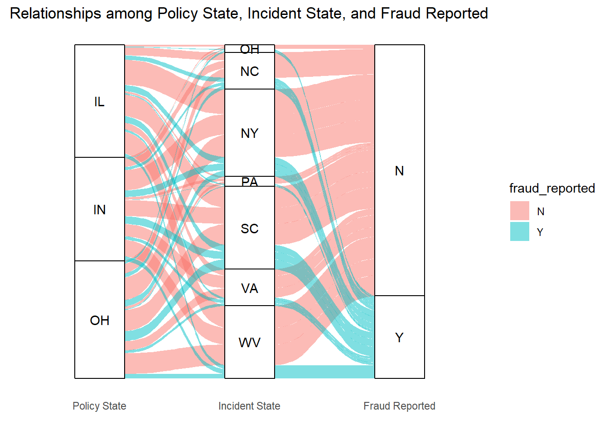

Warning: package 'dplyr' was built under R version 4.2.3
Attaching package: 'dplyr'
The following objects are masked from 'package:stats':
filter, lag
The following objects are masked from 'package:base':
intersect, setdiff, setequal, union
Code
library(tidyr)
Warning: package 'tidyr' was built under R version 4.2.3
Code
library(tibble)
Warning: package 'tibble' was built under R version 4.2.3
Code
library(ggplot2)
Warning: package 'ggplot2' was built under R version 4.2.3
Code
library(choroplethr)
Warning: package 'choroplethr' was built under R version 4.2.3
Loading required package: acs
Warning: package 'acs' was built under R version 4.2.3
Loading required package: stringr
Warning: package 'stringr' was built under R version 4.2.3
Loading required package: XML
Warning: package 'XML' was built under R version 4.2.3
Attaching package: 'acs'
The following object is masked from 'package:dplyr':
combine
The following object is masked from 'package:base':
apply
Code
# data preprocess data <-read.csv('insurance_claims.csv', na.strings =c("?", "NA"))data <-subset(data, select =-X_c39)
3.1 Geographical Trends
Here, we primarily focus on two variables: ‘policy_state,’ which means the state where the insurance policy was issued; and ‘incident_state,’ which means the state where the incident occurred.
library(choroplethr)library(ggplot2)library(RColorBrewer)# 创建州级地图并更改颜色方案map <-state_choropleth(fraud_rate_by_state, title ="Fraud Rate by State", legend ="Fraud Rate") +scale_fill_brewer(palette ="Reds", name ="Fraud Rate")
Warning in self$bind(): The following regions were missing and are being set to
NA: arizona, arkansas, louisiana, minnesota, mississippi, montana, new mexico,
north dakota, oklahoma, tennessee, california, delaware, wisconsin, wyoming,
alabama, alaska, florida, idaho, kansas, maryland, colorado, new jersey,
washington, vermont, utah, iowa, kentucky, maine, massachusetts, connecticut,
michigan, missouri, nebraska, nevada, new hampshire, oregon, rhode island, south
dakota, district of columbia, texas, georgia, hawaii, illinois, indiana
Scale for fill is already present.
Adding another scale for fill, which will replace the existing scale.
Warning in min(xx[xx > upper]): no non-missing arguments to min; returning Inf
Warning in self$bind(): The following regions were missing and are being set to
NA: arizona, arkansas, louisiana, minnesota, mississippi, montana, new mexico,
north dakota, oklahoma, pennsylvania, tennessee, virginia, california, delaware,
west virginia, wisconsin, wyoming, alabama, alaska, florida, idaho, kansas,
maryland, colorado, new jersey, north carolina, south carolina, washington,
vermont, utah, iowa, kentucky, maine, massachusetts, connecticut, michigan,
missouri, nebraska, nevada, new hampshire, new york, oregon, rhode island, south
dakota, district of columbia, texas, georgia, hawaii
Scale for fill is already present.
Adding another scale for fill, which will replace the existing scale.
Warning in to_lodes_form(data = data, axes = axis_ind, discern =
params$discern): Some strata appear at multiple axes.
Warning in to_lodes_form(data = data, axes = axis_ind, discern =
params$discern): Some strata appear at multiple axes.
Warning in to_lodes_form(data = data, axes = axis_ind, discern =
params$discern): Some strata appear at multiple axes.

没什么规律，五湖四海呈现相同特征
3.2 Incident Details
3.2.1 capital situation
we mainly focus on two variables: ‘capital-gains,’ which means the capital gains of the insured individual; and ‘capital-loss,’ which means the capital losses of the insured individual.
Code
library(ggplot2)library(dplyr)library(tidyr)# 假设 data 是您的原始数据集# 添加一列作为个体或分组的标识符data <- data %>%mutate(id =row_number())# 为了绘制斜率图，我们需要将数据转换为长格式long_data <- data %>%select(id, capital.loss, capital.gains) %>%pivot_longer(cols =-id, names_to ="variable", values_to ="value")# 绘制斜率图，为每个 id 绘制一条线ggplot(long_data, aes(x = variable, y = value, group = id)) +geom_line(alpha =0.06) +theme_minimal() +labs(title ="Slope Graph for Capital Loss and Capital Gain",x ="",y ="Value")
3.2.2 Time
Here, we mainly focus on two variables: ‘incident_date,’ which means the date of the incident; and ‘incident_hour_of_the_day,’ which means the hour of the day when the incident occurred.
Code
library(ggplot2)library(dplyr)library(lubridate)
Warning: package 'lubridate' was built under R version 4.2.3
Attaching package: 'lubridate'
The following objects are masked from 'package:base':
date, intersect, setdiff, union
Code
# 转换 incident_date 到 Date 类型data$incident_date <-as.Date(data$incident_date, format ="%m/%d/%Y")# 标记欺诈的事件data$fraud_flag <-ifelse(data$fraud_reported =='Y', 1, 0)# 计算每个日期的欺诈率fraud_rate_by_date <- data %>%group_by(incident_date) %>%summarise(fraud_rate =mean(fraud_flag))# 绘制密度图ggplot(fraud_rate_by_date, aes(x = incident_date, y = fraud_rate *100)) +geom_smooth(method ="loess", se =FALSE, span =0.3) +theme_minimal() +labs(title ="Fraud Rate by Incident Date",x ="Incident Date",y ="Fraud Rate(%)")
`geom_smooth()` using formula = 'y ~ x'
Code
# 计算每个小时的欺诈率fraud_rate_by_hour <- data %>%group_by(incident_hour_of_the_day) %>%summarise(fraud_rate =mean(fraud_flag) *100) # 转换为百分比# 绘制欺诈率随小时变化的图ggplot(fraud_rate_by_hour, aes(x = incident_hour_of_the_day, y = fraud_rate)) +geom_smooth(method ="loess", se =FALSE, span =0.3) +# 添加平滑趋势线theme_minimal() +labs(title ="Fraud Rate by Incident Hour of the Day",x ="Incident Hour of the Day",y ="Fraud Rate(%)")
`geom_smooth()` using formula = 'y ~ x'
3.2.3 Type
Focus on three variables: ‘incident_type,’ which is the type of the incident; ‘collision_type,’ which is the type of collision, if applicable; and ‘incident_severity,’ which is the severity of the incident.
Code
data1 <-subset(data, !is.na(incident_type) &!is.na(collision_type) &!is.na(incident_severity) &!is.na(fraud_reported))vcd::mosaic(fraud_reported ~ incident_type + collision_type + incident_severity, data1, direction =c('h', 'h', 'v'), main ="Association between Age.Groups and Subchapter")
This time we focus on four variables to explore their relationship with fraud: ‘property_damage’, which indicates if there was any property damage; ‘bodily_injuries’, the number of bodily injuries in the incident; ‘police_report_available’, which indicates if a police report is available; and ‘witnesses’, the number of witnesses to the incident.
Code
library(dplyr)library(tidyr)library(ggplot2)# Assuming your data is already read and named 'data'# Convert the fraud_reported to a numerical flagdata1 <-subset(data, !is.na(property_damage) &!is.na(bodily_injuries))data1$fraud_reported_flag <-ifelse(data1$fraud_reported =="Y", 1, 0)# Group by 'property_damage' and 'bodily_injuries' to calculate the mean fraud ratefraud_rates <- data1 %>%group_by(property_damage, bodily_injuries) %>%summarise(fraud_rate =mean(fraud_reported_flag, na.rm =TRUE)) %>%ungroup()
`summarise()` has grouped output by 'property_damage'. You can override using
the `.groups` argument.
Code
# Create the heatmapp1 <-ggplot(fraud_rates, aes(x = property_damage, y = bodily_injuries, fill = fraud_rate)) +geom_tile() +scale_fill_gradient(low ="white", high ="red", labels = scales::percent_format()) +theme_minimal() +labs(x ="Bodily Injuries", y ="Property Damage", fill ="Fraud Rate") +geom_text(aes(label = scales::percent(fraud_rate)), size =4, colour ="black")
Code
library(patchwork)
Warning: package 'patchwork' was built under R version 4.2.3
Code
data2 <-subset(data, !is.na(police_report_available) &!is.na(witnesses))data2$fraud_reported_flag <-ifelse(data2$fraud_reported =="Y", 1, 0)# Group by 'property_damage' and 'bodily_injuries' to calculate the mean fraud ratefraud_rates <- data2 %>%group_by(police_report_available, witnesses) %>%summarise(fraud_rate =mean(fraud_reported_flag, na.rm =TRUE)) %>%ungroup()
`summarise()` has grouped output by 'police_report_available'. You can override
using the `.groups` argument.
Code
# Create the heatmapp2 <-ggplot(fraud_rates, aes(x = police_report_available, y = witnesses, fill = fraud_rate)) +geom_tile() +scale_fill_gradient(low ="white", high ="red", labels = scales::percent_format()) +theme_minimal() +labs(x ="police_report_available", y ="witnesses", fill ="Fraud Rate") +geom_text(aes(label = scales::percent(fraud_rate)), size =4, colour ="black")(p1 | p2)
3.2.5 Claim
This time, we are primarily focusing on four numerical variables: total claim amount (total_claim_amount), claim amount for injuries (injury_claim), claim amount for property damage (property_claim), and claim amount for vehicle damage (vehicle_claim).
Code
library(ggplot2)# 绘制盒形图，使用facet_wrap来根据fraud_reported的值分面p1 <-ggplot(data, aes(x = total_claim_amount, y = fraud_reported)) +geom_boxplot() +theme_minimal() +labs(x ="Total Claim Amount", y ="Fraud Reported", title ="Total Claim Amount by Fraud Reported")p2 <-ggplot(data, aes(x = injury_claim, y = fraud_reported)) +geom_boxplot() +theme_minimal() +labs(x ="claim amount for injuries", y ="Fraud Reported", title ="Total Claim Amount by Fraud Reported")p3 <-ggplot(data, aes(x = property_claim, y = fraud_reported)) +geom_boxplot() +theme_minimal() +labs(x ="claim amount for property damage", y ="Fraud Reported", title ="Total Claim Amount by Fraud Reported")p4 <-ggplot(data, aes(x = vehicle_claim, y = fraud_reported)) +geom_boxplot() +theme_minimal() +labs(x ="claim amount for vehicle damage", y ="Fraud Reported", title ="Total Claim Amount by Fraud Reported")(p1 | p2) /(p3 | p4)